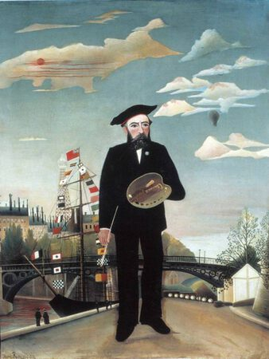

Henri Rousseau,1844 – 1910,Primitivism,French,"Henri Julien Félix Rousseau (French: [ɑ̃ʁi ʒyljɛ̃ feliks ʁuso]; May 21, 1844 – September 2, 1910) was a French post-impressionist painter in the Naïve or Primitive manner. He was also known as Le Douanier (the customs officer), a humorous description of his occupation as a toll and tax collector. He started painting seriously in his early forties; by age 49, he retired from his job to work on his art full-time.Ridiculed during his lifetime by critics, he came to be recognized as a self-taught genius whose works are of high artistic quality. Rousseau's work exerted an extensive influence on several generations of avant-garde artists.",https://en.wikipedia.org/wiki/Henri_Rousseau,70
